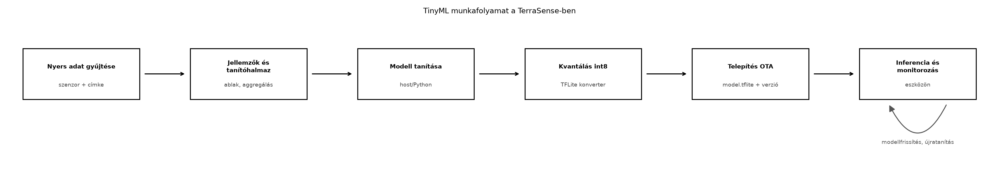

Az üvegházban a Helyi feldolgozás: szűrés, aggregálás, eseménydetektálás alfejezetben megismert determinisztikus szabályok sok esetben elégségesek: ha a talajnedvesség hirtelen csökken, az egyszerű küszöb is jól működik. Vannak azonban olyan hibamódok, amelyek több szenzor együttes, nem nyilvánvaló mintázatában jelennek meg: például egy eltömődött csepegtetőnél a talajnedvesség és a hőmérséklet együtt mutat anomáliát, de egyenként még a normál tartományban maradhat. Ilyenkor a gépi tanulás kiegészítheti a szabályalapú logikát. A kihívás az, hogy az eszköz egy Mikrovezérlő vs. Linuxos processzor: memória, OS nélküli világ alfejezetben tárgyalt erőforrás-korlátos környezet: néhány tíz KiB RAM, néhány száz KiB flash, és nincs virtuális memória. A TinyML pontosan erre a környezetre optimalizálja a modelleket.
Definíció. A TinyML olyan gépi tanulási modellek tervezése, betanítása és futtatása, amelyek erőforrás-korlátos beágyazott eszközökön – jellemzően MCU-n vagy kis teljesítményű edge-gatewayen – futnak, gyakran néhány tíz–száz KiB modellmérettel és néhány milliszekundumos vagy az alatti inferenciaidővel.
Definíció. Az inferencia a betanított modell futtatása új bemeneti adaton; a kvantálás pedig a modell lebegőpontos súlyainak és aktivációinak alacsonyabb bitszélességű, gyakran 8 bites egész számmá alakítása úgy, hogy a pontosság lehetőleg alig csökkenjen.
A TinyML-munkafolyamat két részre válik: a tanítás és a modellátalakítás tipikusan hoston vagy felhőben fut, a telepített modell pedig az eszközön. Az alábbi folyamatábra a TerraSense szempontjából mutatja a lépéseket.

A folyamat a címkézett vagy múltból ismert nyers adatok gyűjtésével indul. Ebből a Helyi feldolgozás: szűrés, aggregálás, eseménydetektálás alfejezetben megismert ablakos jellemzőket számítjuk, például átlagot, szórást, minimumot, maximumot és trendet. A tanítás hoston, Python-környezetben történik; majd a modellt int8-as TensorFlow Lite formátumba konvertáljuk. A kvantált modellt verziózott artefaktumként telepítjük az eszközre OTA-n keresztül. Az eszközön az inferencia fut, és a kimenetet a szabályalapú logika vagy riasztási küszöb használja fel.
A TinyML nem helyettesíti automatikusan a szabályokat. A döntésnél a késleltetés, az adatvédelem, a sávszélesség és az energiaigény mellett a fejlesztési költséget is figyelembe kell venni.
| Szempont | Szabályalapú / egyszerű küszöb | TinyML az eszközön |
|---|---|---|
| Fejlesztési idő | rövid, azonnal ellenőrizhető | adatgyűjtés, tanítás, kiértékelés kell |
| Determinisztikusság | teljes | közelítő, statisztikai |
| Erőforrásigény | minimális | modell + arena + CPU |
| Sok jellemző, nem lineáris kapcsolat | nehezen karbantartható | jól kezeli |
| Frissítés | kódváltozás, firmware-OTA | modell-OTA lehetséges |
| Kritikus biztonsági döntés | előnyös | csak kiegészítő lehet |
A lokális inferencia legfontosabb előnyei:
Ugyanakkor a modell becslési hibája nem okozhat közvetlen veszélyes állapotot; a végrehajtó logika maradjon determinisztikus.
Egy kis, teljesen kapcsolt neurális háló paraméterszáma könnyen számítható. Ha a bemeneti jellemzők száma , a rejtett rétegben neuron van, a kimeneti osztályok száma pedig , akkor a paraméterszám:
A műveletigényt a szorzás-összegzés (MAC) műveletek száma közelíti:
A kvantálásnál egy lebegőpontos értékből egész értéket képzünk skála és nullapont segítségével:
A skála az értéktartomány és a 8 bites tartomány hányadosa, a nullapont pedig azt mondja meg, hogy a nulla lebegőpontos érték melyik egész számra képződik le. Az int8-as modell a 32 bites lebegőpontos modellnél körülbelül négyszer kisebb tárhelyet igényel, és az MCU fixpontos vagy DSP-utasításokkal gyorsabban dolgozza fel.
A Cortex-M osztályú MCU-kon egy egyszerű teljesen kapcsolt háló
inferenciaideje jellemzően mikroszekundumos–milliszekundumos
nagyságrendű. A pontos érték az órajeltől, a DSP-kiterjesztéstől és az
interpreter overheadjétől függ; a native_sim időzítése nem
hardverhű.
A Google által korábban TensorFlow Lite for Microcontrollers néven ismert keretrendszer – amelyet az újabb dokumentáció LiteRT for Microcontrollers néven említ – kifejezetten MCU-kra tervezett interpretált futtatókörnyezet. A modell FlatBuffers formátumú, amelyet C-tömbként vagy fájlból beolvasva lehet beágyazni. Az interpreter fix méretű, statikusan allokált memóriaarénát használ; ez illeszkedik a Mikrovezérlő vs. Linuxos processzor: memória, OS nélküli világ alfejezetben tárgyalt statikus allokációs elvhez.
Az alábbi API-vázlat illusztrálja a futtatást; a pontos függvény- és mezőnevek a használt kiadásban ellenőrizendők.
#include "model.h" // g_model: kvantált, konvertált modell
#include "tensorflow/lite/micro/micro_interpreter.h"
#include "tensorflow/lite/micro/micro_mutable_op_resolver.h"
namespace {
constexpr size_t kArenaSize = 4 * 1024;
alignas(16) static uint8_t arena[kArenaSize];
tflite::MicroInterpreter* interpreter = nullptr;
TfLiteTensor* input = nullptr;
TfLiteTensor* output = nullptr;
}
void ml_init(void) {
static tflite::MicroMutableOpResolver<2> resolver;
resolver.AddFullyConnected();
resolver.AddSoftmax();
static tflite::MicroInterpreter static_interpreter(
tflite::GetModel(g_model), resolver, arena, kArenaSize);
interpreter = &static_interpreter;
interpreter->AllocateTensors();
input = interpreter->input(0);
output = interpreter->output(0);
}
int ml_classify(const int8_t* features) {
for (size_t i = 0; i < input->bytes; ++i) {
input->data.int8[i] = features[i];
}
interpreter->Invoke();
// Argmax vagy küszöb a kimeneti tenzerből.
return 0;
}A MicroMutableOpResolver csak a modell által ténylegesen
használt műveleteket regisztrálja, így a linker elhagyhatja a felesleges
kódot. A Zephyr rendelkezik tflite-micro modullal, de az
integráció pontos Kconfig-nevét és a mintapéldányokat ellenőrizni kell
az adott verzióban.
A TerraSense-ben érdemes két szinten gondolkodni:
ts-node szintjén: egy 6 bemenetes osztályozó,
amely a Helyi feldolgozás: szűrés, aggregálás,
eseménydetektálás alfejezetben kiszámított ablakjellemzőkből három
kimeneti osztályt becsül: normal,
sensor_fault, valve_fault. A kimeneti
valószínűség alapján a determinisztikus állapotgép dönthet arról, hogy
azonnal riaszt, vagy csak megnövelt mintavételi gyakorisággal folytatja
a megfigyelést.
ts-gw szintjén: a gateway több csomópont adatát összevonva detektálhat üvegház-szintű anomáliát, például térben inkonzisztens hőmérsékleti mintázatot. Itt C++-ban ugyanaz a TFLite-runtime futtatható Linux-processzon, nagyobb arénával és nagyobb modellel.
A modell kimenete nem helyettesíti az állapotgépet: a szelepzárás és a hibajelzés szabályai maradjanak ellenőrizhető, determinisztikus feltételekhez kötve. A TinyML a gyanú detektálására szolgál, nem a biztonsági döntés közvetlen meghozatalára.
A modell nem kód, hanem adat: egy model.tflite fájl,
amely verzióval, mérettel és kriptográfiai hashel rendelkezik. Ugyanaz
az aláírási és visszagörgetési mechanizmus alkalmazható rá, mint a
firmware-re, ezért a OTA-frissítés: A/B képek,
rollback, delta, fokozatos kiadás alfejezetben tárgyalt
artefaktumkezeléshez csatlakozik. A modellverziót a bemeneti jellemzők
vektorának verziójával együtt kell kezelni: ha a jellemzőkészlet
változik, a régi modellt nem szabad az új firmware-en futtatni, és
fordítva.
Továbbvitt eredmény. A TerraSense-modellt a laborban
~/iot-labor/i040/model/model.tflite néven, a metaadatokat
pedig model.json néven tároljuk. A model.json
tartalmazza a version, a feature_version, a
SHA-256 hash és az
input_scale/input_zero_point mezőket. Ezt a
konvenciót és a fájlnevet használja majd a OTA-frissítés: A/B képek, rollback, delta, fokozatos
kiadás alfejezet.
Tegyük fel, hogy a ts-node modellje a következő: 6 bemeneti jellemző, 16 neuron egy rejtett rétegben, és 3 kimeneti osztály. A paraméterszám:
A szükséges MAC-műveletek száma:
Az int8-as súlyok és torzítások együttes mérete 163 B, míg float32 esetén ugyanez közelítőleg 652 B. A FlatBuffers-modellhez hozzáadódik a gráf és a tenzorleírók overheadje, így a teljes int8-as modell gyakorlatban 1–2 KiB nagyságrendű lehet, a float32 pedig 3–4 KiB. Az SRAM-aréna a rejtett réteg 16 int8-as aktivációja, a 6 bemeneti és 3 kimeneti tenzor, valamint az interpreter belső állapota miatt 4 KiB-tal kényelmesen kiszolgálható.
Időbecslés illusztratív célból: egy 64 MHz-es Cortex-M4 mag 144 MAC
műveletet elvileg néhány mikroszekundum alatt elvégez, de a
memória-elérés, az aktiváció és az interpreter overheadje miatt a
gyakorlatban inkább 50–500 µs nagyságrendű futásidő várható. Ez nem mért
adat, és a native_sim futtatás nem helyettesíti a valós
hardveres mérést. A lényeg az, hogy a modell az óránkénti vagy
eseményvezérelt mintavétel mellett energia szempontból elhanyagolható a
rádióadáshoz képest, ha miatta egy MQTT-csomag elhagyható.
A modell méretét a konvertálás után ls -l model.tflite,
a beágyazott C-tömb méretét pedig a bináris size kimenete
mutatja. A pontos tenzorméreteket a TFLite interpreter debug-kimenete
vagy a modellvizsgáló eszköz írja ki. A gyakori hibákat az alábbi
táblázat foglalja össze.
| Tünet | Lehetséges ok | Javítás |
|---|---|---|
AllocateTensors() hibát ad |
túl kicsi arena | növeld a kArenaSize értéket, vagy ellenőrizd a modell
tenzorméreteit |
| A modell mindig ugyanazt az osztályt adja | kiegyensúlyozatlan tanítóhalmaz vagy rossz küszöb | tanítóadatok átsúlyozása, küszöb kalibrálása |
| Hoston jó, eszközön rossz | kvantálási hiba, nem egyező bemeneti normalizálás | reprezentatív kalibráció, ugyanaz a skála a jellemzőknél |
| Túl nagy a bináris méret | nem használt műveletek is belinkelődtek | MicroMutableOpResolver csak a szükséges op-kkal |
| Frissített modell rossz eredményt ad | jellemzőverzió-eltérés | feature_version ellenőrzése OTA előtt |
model.json leírót a Kidolgozott példa 6 bemenetes modelljéhez. A fájl
tartalmazzon version, feature_version,
hash és kvantálási paramétereket. Ezt a fájlformátumot
előkészíti a OTA-frissítés: A/B képek, rollback,
delta, fokozatos kiadás alfejezet.normal
osztályt ad. Nevezz meg négy lehetséges okot, és mindegyikhez egy-egy
diagnosztikai lépést.model.json:{
"name": "ts-node-anomaly-v1",
"version": "1.0.0",
"feature_version": 1,
"format": "tflite-int8",
"hash_sha256": "labor-only-placeholder-hash",
"input_scale": 0.235,
"input_zero_point": -43,
"output_labels": ["normal", "sensor_fault", "valve_fault"]
}A hash_sha256 értékét a tényleges modellfájlból kell
számítani, nem szabad kézzel kitalálni.
A TinyML lehetővé teszi, hogy a TerraSense ts-node és ts-gw rétege
lokálisan, kis késleltetéssel, adatvédelem és nagyobb rádióforgalom
nélkül detektáljon anomáliákat. A modell méretét a paraméterszám és az
int8 kvantálás határozza meg; egy 6 bemenetes, 16 rejtett neuronos
osztályozó mindössze 144 MAC műveletet és néhány KiB-ot igényel. A
munkafolyamat a címkézett adatgyűjtéstől a tanításon és kvantáláson át a
verziózott OTA-telepítésig tart. A modell kimenete csak gyanút ad, a
biztonsági végrehajtás determinisztikus marad. Továbbvitt
eredmény: a ~/iot-labor/i040/model/model.tflite és
model.json elnevezés, valamint a
feature_version és hash metaadat-konvenció,
amelyet a OTA-frissítés: A/B képek, rollback, delta,
fokozatos kiadás alfejezet használ fel.
tflite-micro integrációs dokumentációEllenőrzési igény: a LiteRT/TFLite Micro aktuális termék- és
API-nevei, a MicroInterpreter,
MicroMutableOpResolver és a data.int8 mező
pontos aláírása a használt könyvtári verzióban ellenőrizendő. A példában
szereplő modellméretek és futásidők számított vagy illusztratív
jellegűek; valós hardveres mérést nem helyettesítenek.